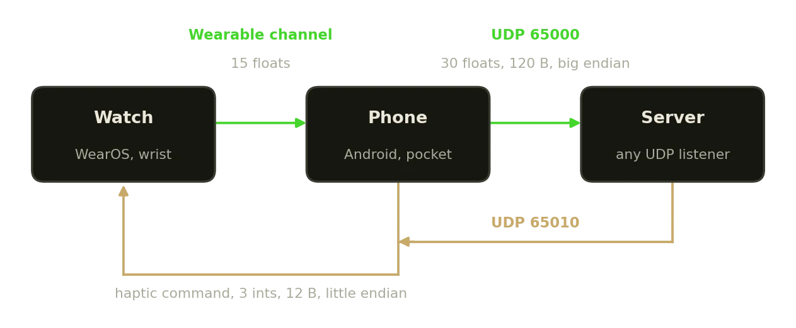
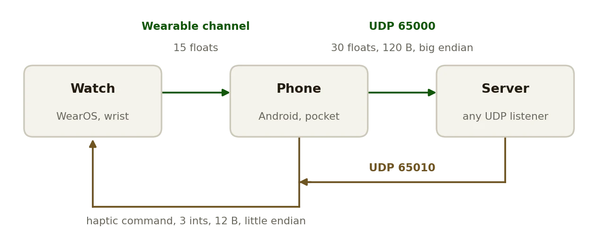

Development · 2025
IMU Streamer
A wrist device and a phone on the same UDP socket, with a haptic return path.
AppIMUKotlin


What it does
- The watch streams linear acceleration, angular rate and rotation vector to the phone over the wearable channel; the phone merges in its own sensors and sends both to whatever server the app points at.
- Every datagram carries a watch block and a phone block, 30 big-endian floats on UDP port 65000, so a consumer never has to align two streams. Gravity is already removed by the platform.
- A server can vibrate the watch: three little-endian integers to port 65010, intensity, pulse count and milliseconds per pulse, which makes closed-loop experiments possible over the same link.
- Nothing to calibrate, and the server address is set in the app, so no rebuild to change it.
Around it
- A Python receiver plots both devices live, learns the phone's address from the first packet, and carries sliders and a button for firing haptic commands back.
- The data source for IMU Gesture Classifier's live recognition and for IVO. Derived from the wearable-motion-capture streaming apps, credited in the README.
Facts
- Year
- 2025
- Status
- Public
- Stack
- Kotlin, Android and WearOS, Gradle
- Protocol
- 30 floats per datagram, UDP 65000 out, 65010 back